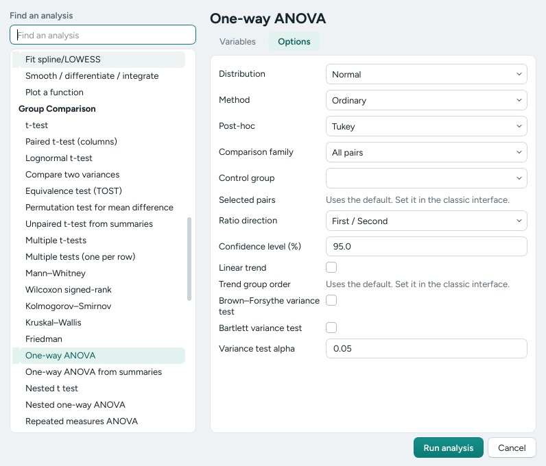
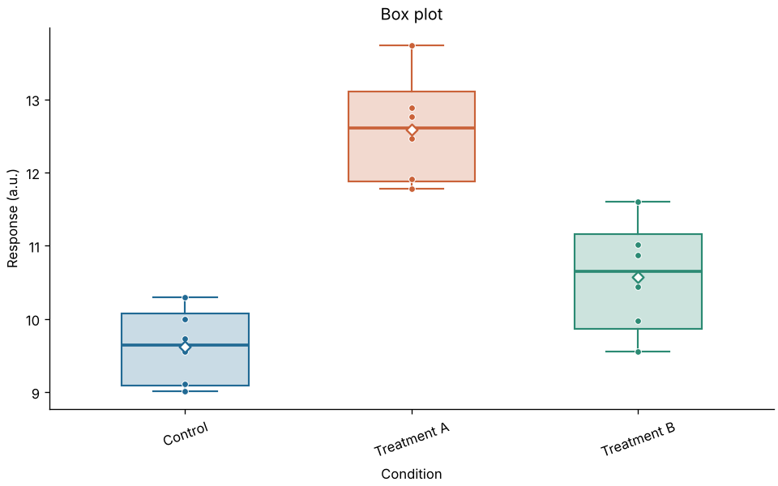
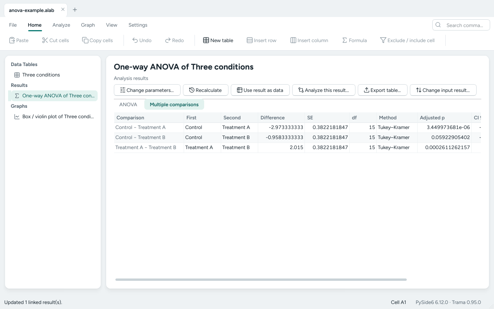

GuideStatisticsANOVA
Compare several conditions with ANOVA
You measured a response on six units in each of three conditions: a control and two treatments. Do the means really differ? And which pairs do?
- Checked on Trama 0.95.0 beta
- Data 18 synthetic units
- Seed 7
- Reading 8 minutes
When to use it
One-way ANOVA compares the means of three or more independent groups. The F test answers a single question: is at least one mean different from the others? To find out which pairs differ you need post hoc comparisons, which adjust the threshold for the number of comparisons made.
- Which comparisons. All pairs: Tukey (with unequal group sizes it becomes Tukey–Kramer). Only each treatment against the control: Dunnett, which has more power because it makes fewer comparisons.
- Independent units. Each row must be a separate experimental unit: an animal, a well seeded separately, an experiment repeated on another day. Technical replicates of the same unit do not count as units. The edge case shows why.
- Similar spread. Ordinary ANOVA assumes the same variance in every group. If the standard deviations are very different, choose Welch and Games–Howell comparisons.
- Residuals without strong skew. With six units per group the test tolerates moderate departures from normality, not long tails or outliers.
The data
A table with one row per unit and two columns: Condition, the text that says which group the row belongs to, and Response (a.u.), the measurement. Six units per condition, no missing values. The standard deviations are 0.50, 0.72 and 0.74: the largest is 1.5 times the smallest.
| Condition | Response (a.u.) |
|---|---|
| Control | 10.00 |
| Control | 10.30 |
| Control | 9.73 |
| … 15 more rows | |
In Trama
- Open the project with File → Open…, or bring in the CSV with File → Import into project….
- Select the table Three conditions and choose Analyze → Analyze… (Ctrl+Shift+A).
- In the list of analyses open Group Comparison → One-way ANOVA. On the Variables tab set Response =
Response (a.u.)and Group =Condition. - On the Options tab set the values below and press Run analysis.
- For the graph use Graphing → Box / violin plot with Single response, Show mean and Overlay observations. It is already set up in the attached project.
| Distribution | Normal |
|---|---|
| Method | Ordinary |
| Post-hoc | Tukey |
| Comparison family | All pairs |
| Confidence level (%) | 95 |
Show the Options tab screenshot

Read the result
The result sheet has two tabs, ANOVA and Multiple comparisons.


| Term | df | F | p |
|---|---|---|---|
| Condition | 2 | 31.53 | 4.2 × 10⁻⁶ |
| Residual | 15 |
Means: control 9.62, treatment A 12.59, treatment B 10.58 a.u. The residual mean square is 0.438.
With F(2, 15) = 31.53 and p < 0.0001, at least one mean differs from the others. The Tukey–Kramer comparisons say which:
| Comparison | Difference | 95% CI | Adjusted p |
|---|---|---|---|
| Control − Treatment A | −2.97 | −3.97 to −1.98 | < 0.0001 |
| Control − Treatment B | −0.96 | −1.95 to 0.03 | 0.059 |
| Treatment A − Treatment B | 2.02 | 1.02 to 3.01 | 0.0003 |
Treatment A raises the response by about 3 a.u. over the control and by 2 over B, with intervals far from zero. For B against the control the interval runs from −1.95 to 0.03: it includes zero, but also differences of nearly 2 a.u. The result is inconclusive, which does not mean that B has no effect. Report the interval, not just the p value.
Show the Multiple comparisons tab screenshot

Technical replicates counted as units
Suppose you read every unit three times and put all 54 readings in the table, as if they were 54 independent units. The group means stay the same, but Trama cannot know that three readings come from the same unit: the residual degrees of freedom go from 15 to 51 and the standard error of each difference from 0.382 to 0.218.
| 18 units | 54 readings | |
|---|---|---|
| F (df) | 31.53 (2, 15) | 97.02 (2, 51) |
| Control − B: difference | −0.96 | −0.96 |
| Control − B: standard error | 0.382 | 0.218 |
| Control − B: adjusted p | 0.059 | 0.00016 |
The difference between control and B now looks clear-cut, but that comes from the counting, not from the data. This is pseudoreplication. How to fix it: average the replicates of each unit and analyse one row per unit. In this example the unit means give back the main table exactly. Alternatively, Trama has Nested one-way ANOVA, which needs the data in a Nested table.
How to notice. The residual degrees of freedom exceed the number of units minus the number of groups; the table has a column identifying the unit and values that come in blocks of three.
What to report
- What a unit is and how many there are per condition; if there are technical replicates, how they were summarised.
- The type of ANOVA (ordinary or Welch) and the comparison method, with the correct comparison family.
- F with both degrees of freedom, the differences with their confidence intervals, and the adjusted p values.
- Trama version and the
.alabproject that repeats the calculation.
The response of six units per condition was compared with a one-way ANOVA (F(2, 15) = 31.53, p < 0.001) followed by Tukey–Kramer comparisons between all pairs, in Trama 0.95.0 beta. Treatment A increased the response compared with the control (difference 2.97 a.u.; 95% CI 1.98 to 3.97) and with treatment B (2.02 a.u.; 95% CI 1.02 to 3.01). The difference between treatment B and the control was inconclusive (0.96 a.u.; 95% CI −0.03 to 1.95; adjusted p = 0.059).
Sources
- Tukey J. W. (1949). Comparing individual means in the analysis of variance. Biometrics, 5(2), 99–114. doi:10.2307/3001913
- Kramer C. Y. (1956). Extension of multiple range tests to group means with unequal numbers of replications. Biometrics, 12(3), 307–310. doi:10.2307/3001469
- Welch B. L. (1951). On the comparison of several mean values: an alternative approach. Biometrika, 38(3–4), 330–336. doi:10.1093/biomet/38.3-4.330
- Hurlbert S. H. (1984). Pseudoreplication and the design of ecological field experiments. Ecological Monographs, 54(2), 187–211. doi:10.2307/1942661
- Lazic S. E. (2010). The problem of pseudoreplication in neuroscientific studies: is it affecting your analysis? BMC Neuroscience, 11, 5. doi:10.1186/1471-2202-11-5
Checked with Trama 0.95.0 beta (tag v0.95.0, commit 4c07db6) on 20 November 2026. Calculation in analisi/inference.py.